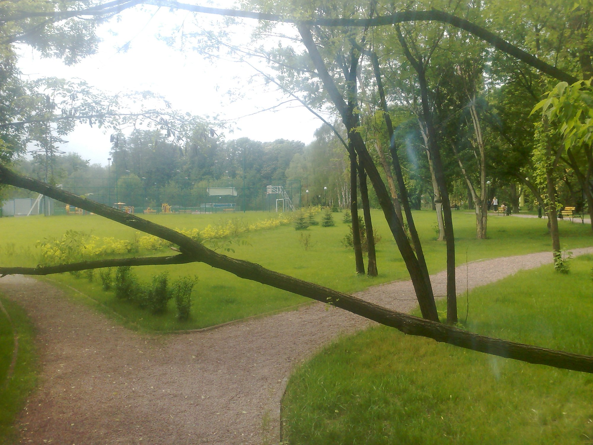
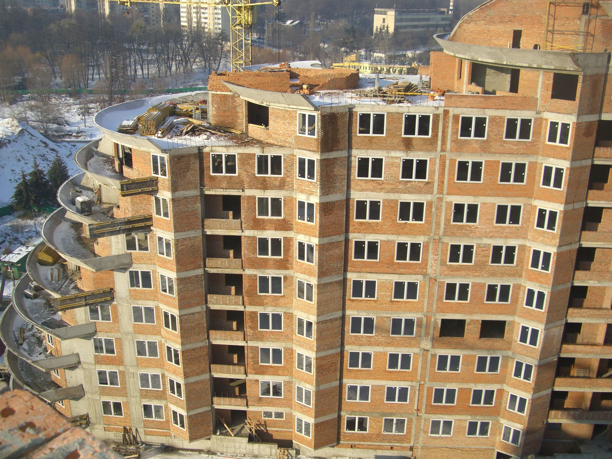
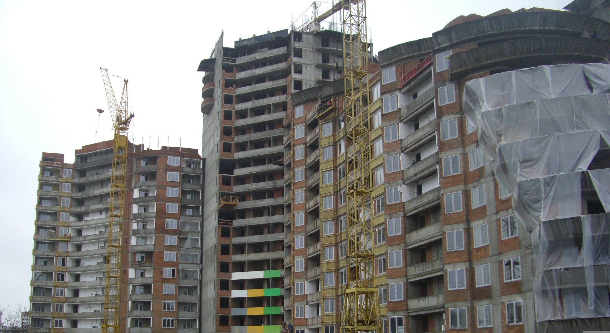
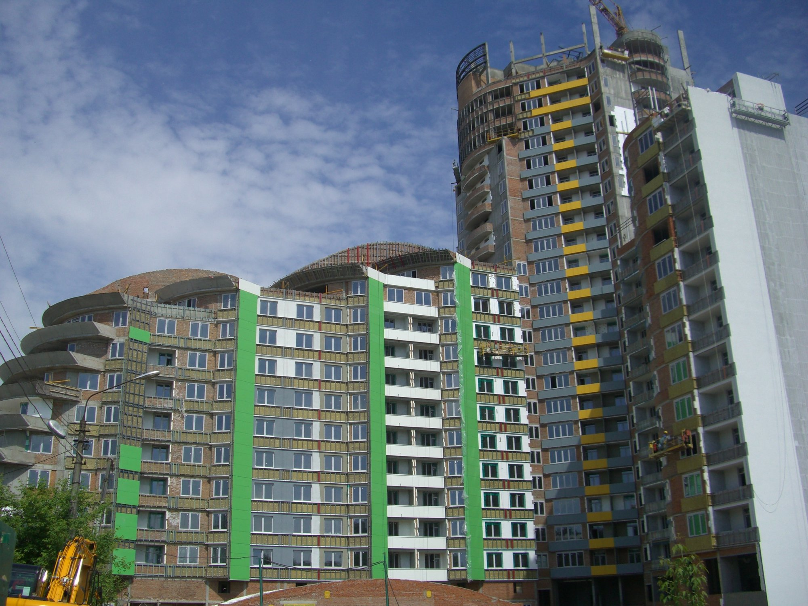
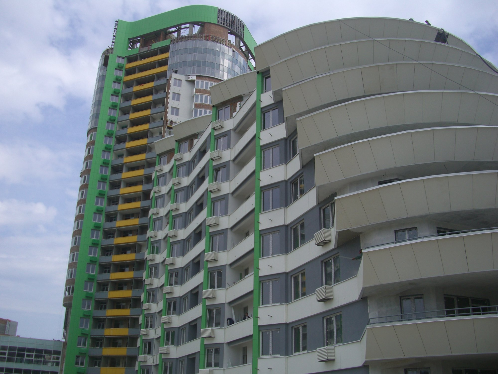
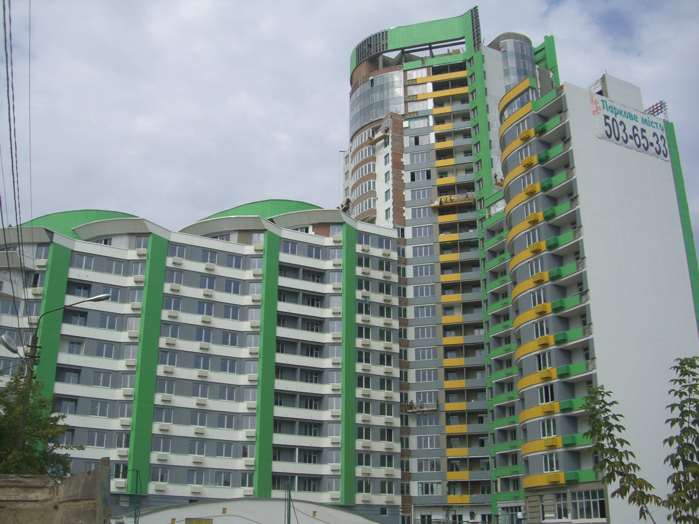
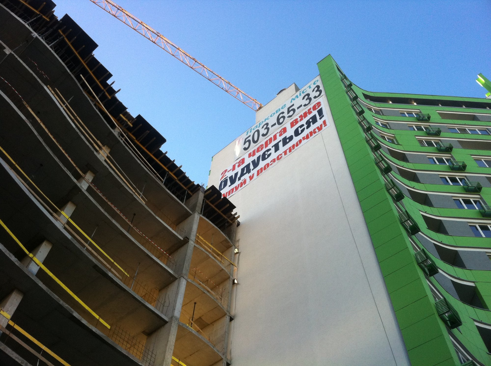
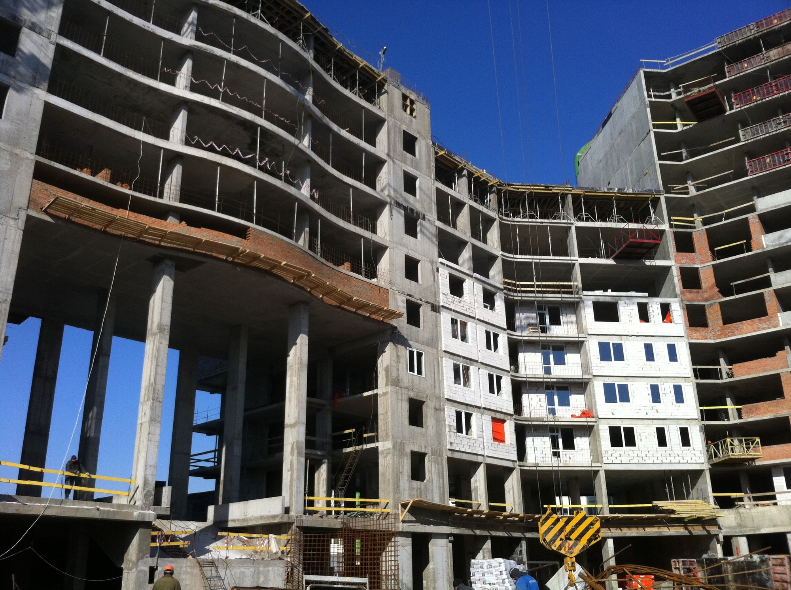
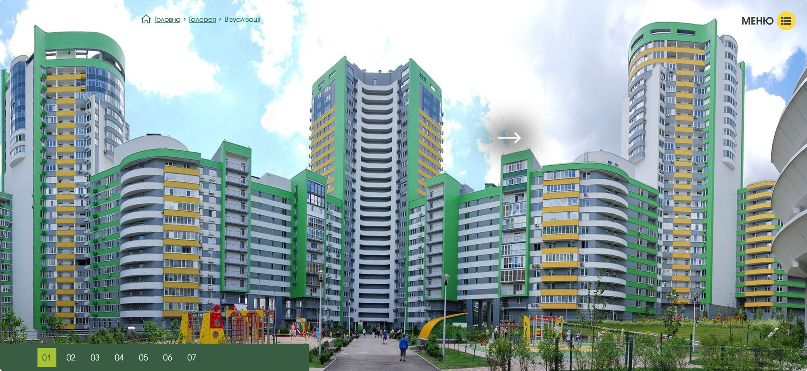
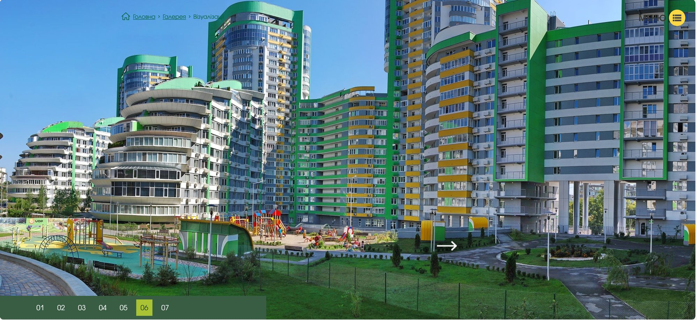

Parkove Misto Residential Complex
Residential • Vertically Integrated Delivery • Kyiv, Ukraine
Overview
Location: Kyiv, Vyshhorodska St., 45
Developer: KAN Development
General Contractor: KAN Stroy
Architect: Archimatika
Parkove Misto is a landmark residential development that redefined urban living in Kyiv by integrating high-density housing with a restored natural landscape. The gated residential complex features landscaped courtyards, a cascading park with lakes, and direct adjacency to the protected natural landmark “Kryterova Hirka.”
The project was delivered within a vertically integrated structure, with KAN Development acting as Developer and KAN Stroy serving as General Contractor. I worked as Project Manager across both organizations, providing end-to-end responsibility for development objectives, construction execution, schedule recovery, and commercial risk mitigation.
The development was executed in two major stages and required a full project restart following an extended construction suspension caused by the economic crisis.
Scope of Work
- Full-cycle project management across Developer and General Contractor entities.
- Re-mobilization of construction works after an eight-month site shutdown.
- Planning and execution of multi-phase residential construction.
- Schedule recovery and productivity acceleration through two-shift site operations.
- Daily coordination with contractors, suppliers, and site leadership.
- Performance tracking, progress analysis, and work-to-complete forecasting.
- Stakeholder coordination with banks, buyers, and internal sales teams.
Challenge
I joined the project at the height of the economic crisis, following an eight-month construction suspension of the first stage (90,000 m²). The second stage (75,000 m²) had to be restarted almost from scratch, requiring full re-mobilization of contractors, suppliers, and site management.
To stimulate apartment sales, a financing bank issued securities and acted as a guarantor for delivery dates. Under the sales agreements, any delay entitled buyers to withdraw from contracts and receive full refunds plus penalties — creating significant commercial and reputational risk for the developer.
Solution
I restructured the project execution strategy by implementing two-shift construction operations and establishing daily site meetings involving senior representatives of all key contractors. Issues were resolved in real time, with decisions taken “on the fly” to avoid delays.
Work performed, work remaining, productivity rates, and trade sequencing were reviewed and analyzed on a daily basis, enabling immediate corrective actions and targeted resource deployment where required.
Result
The project was completed within the contractual delivery timeframe despite the initial suspension and restart. All apartments were handed over as scheduled, with zero buyer cancellations, claims, or penalties, fully meeting the bank’s guarantee obligations and restoring market confidence.
Project Facts
Design Intent


Gallery









